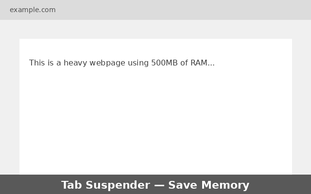
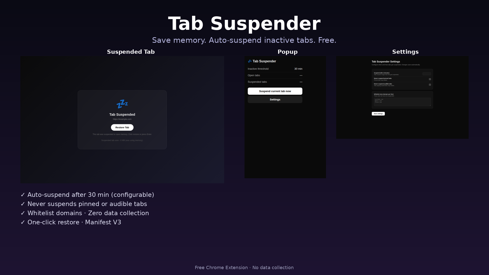
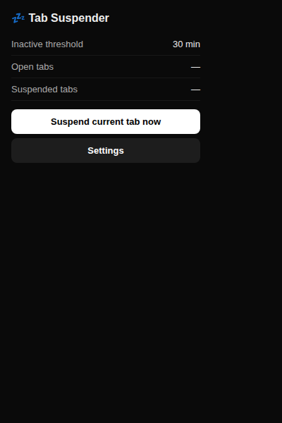
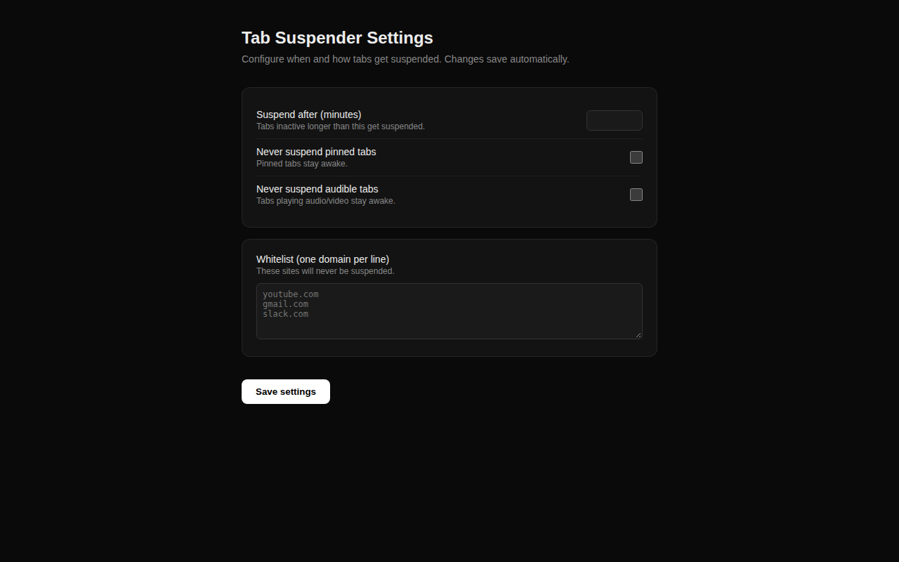
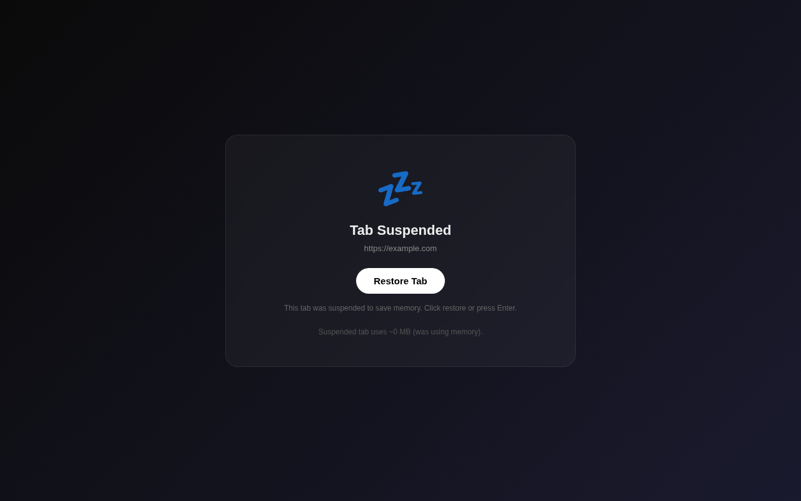

Suspend inactive tabs.
Reclaim your memory.
Tab Suspender automatically puts idle tabs to sleep so Chrome stops eating RAM. One click restores them instantly. No accounts, no tracking, no cost.

Watch a tab get suspended
An animated walkthrough of what happens to an idle tab.
Everything you need to keep Chrome fast
Lightweight, configurable, and respectful of the tabs you actually care about.
Auto-suspend after inactivity
Tabs idle longer than your threshold are automatically replaced with a tiny suspended page. Default 30 minutes, fully configurable from 1 to 1440.
Never suspends pinned tabs
Pinned tabs stay awake by default. Toggle the behavior in settings if you prefer.
Protects audible tabs
Tabs playing audio or video are never suspended, so your music and calls keep going.
Domain whitelist
Keep specific sites (Gmail, Slack, YouTube…) always awake. One domain per line in settings.
Manual "Suspend now"
Suspend the current tab instantly from the popup — perfect before stepping away.
One-click restore
Click Restore or press Enter on the suspended page. The original URL loads right back.
Live popup stats
See open tabs, suspended tabs, and your threshold at a glance from the toolbar.
Synced settings
Settings live in Chrome sync storage, so they follow you across devices.
Private by design
No data collected or sent anywhere. All logic runs locally in your browser.
Three steps, zero friction
A service worker checks your tabs once a minute and suspends the idle ones.
Track activity
Tab Suspender records when each tab was last active using Chrome's tabs and alarms APIs.
Suspend idle tabs
Tabs inactive longer than your threshold are swapped for a lightweight suspended page that uses ~0 MB.
Restore on demand
The original URL is stored in the query string. Click Restore to navigate back instantly.

See it in action
The popup, settings page, and suspended tab view.



Get started in developer mode
Tab Suspender is free and open. Load it unpacked in Chrome in under a minute.
- Download or clone this repository to your computer.
- Open Chrome and go to
chrome://extensions. - Enable Developer mode (top right toggle).
- Click Load unpacked and select the extension folder.
- The 💤 icon appears in your toolbar — you're done.
$ cd tab-suspender
# then load unpacked in chrome://extensions
Works on Chrome, Edge, Brave and any Chromium-based browser (Manifest V3).
Your tabs stay yours.
No data is collected, transmitted, or stored on any server. Settings are saved locally in Chrome sync storage and never leave your browser.
Common questions
Will I lose my tab's scroll position or form data?
Suspending navigates the tab to a lightweight page, so unsaved in-page state (scroll position, half-typed text) is not preserved. The URL is kept and restored on click. Avoid suspending tabs with unsaved work, or whitelist those sites.
Does it suspend tabs playing music?
No. Tabs that are audible are skipped by default. You can toggle this in settings.
Can I exclude certain websites?
Yes. Add domains (one per line) to the whitelist in settings. Matching tabs are never suspended.
What about pinned tabs?
Pinned tabs are never suspended by default. This can be changed in settings.
How much memory does it save?
A suspended tab uses roughly 0 MB instead of the tens or hundreds of MB a full page consumes, freeing RAM for the tabs you're actually using.
Does it work on Firefox?
It's built for Chromium browsers using Manifest V3. Firefox support would require minor changes.